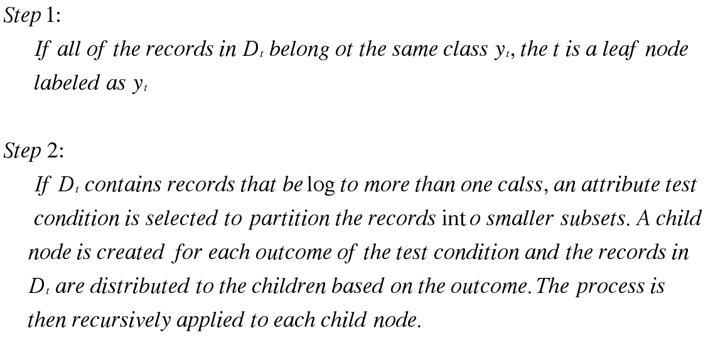
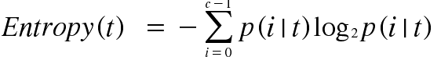
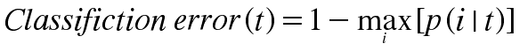

Decision Tree Classification
Introduction
A decision tree is a simpler way of approaching a classifiction problme. Similar to the game 20 question, based on the presonses it will ask questions to decide what the answer can be. A decision tree consists of a root, Internal and leaf node(s). these nodes represent how far into the tree a certain attribute is. The goal of a decision tree is to have one leaf-node be entirely of one class. This gives the algorithm a perfect answer form the questions that it can ask the test data. In principle theer are exponentially many decision trees that can be constructed from a given set of attributes. While some of the ress are more accurate then the others one of the main goals is to develop the most efficient tree.
Hunt's Algorithm
Finding Right Attribute Split
Depending a the different attributes that the decision tree splits, will provide a diffrent resutling tree. It is very important to split on the most dominant attribute. There are many ways to decide the best split but the most common are Entropy, Gini, and Classification error. The goal is to thave the resulting child nodes have less error than the other possible split decision, and more importantly, less error than the parent node.
Entropy
Gini Impurity

Classification Error
Overfitting & Underfitting
One of the key issues with building decision trees is overfitting. Overfitting happens when the decision tree becomes overtrained on the training data. This action will result in too specific decision and will most likely produce bad results for the tree will get too specific. Another problem would be underfitting. This problem is a result of the issue when the tree is finished on a very low amount of attribute decision. This happens when the training data is not consistent enough or is very similar. Two Ways to stop overfitting are Pre-pruning and Post-Pruning.
Pre-Pruning
Pre-Pruning is a technique used to stop the tree from growing too big. The idea of a stopping condition is implemented. This stopping condition is either a depth restriction of a vaule of change that would be the lower bound of the increased entropy. Once the entropy does not increas by that number, the tree will stop growing. One fallback of prepruning is that the tree might growing when it is about to discover a very important attribute codition that might make the whole tree a lot more organized
Post-Pruning
The most common strategy of pruning decision trees is that the tree is allowed to get out of hand and then it is pruned depending on the entorpy gain of each indivdual node relative to their parent node. This allowes the tree to get rid of certain split decision that weren't a great idean in the begninning. The resulting value will most likely be a better model than that of Pre-pruning technique.
Benefits
* Simple to Understand and interpret
* Requires Little Data Preperation
* Able to ahndel both numerical and categorical data
* Robust
Drawbacks
* Problem getting an optimal decision tree (NP complete problem)
* Suseptible to noise if not prunned
* Problems with overfitting if not prunned
* Some concepts might be hard to learn for decisions trees